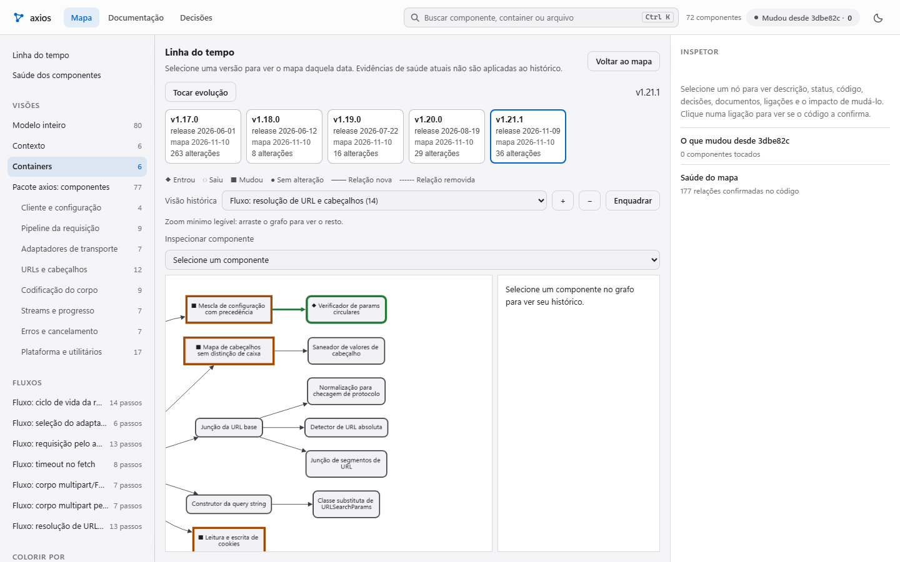
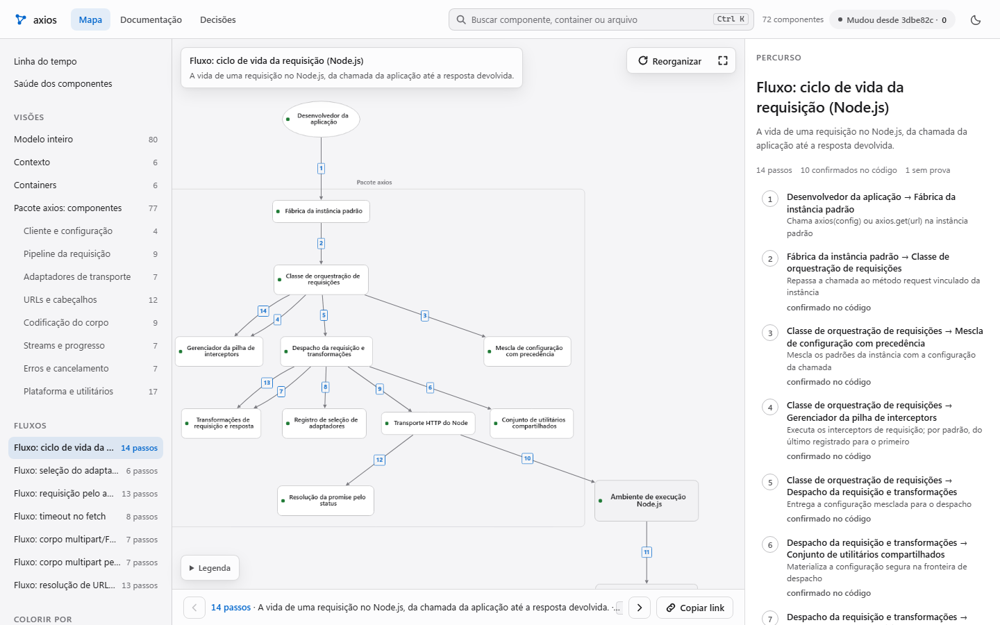
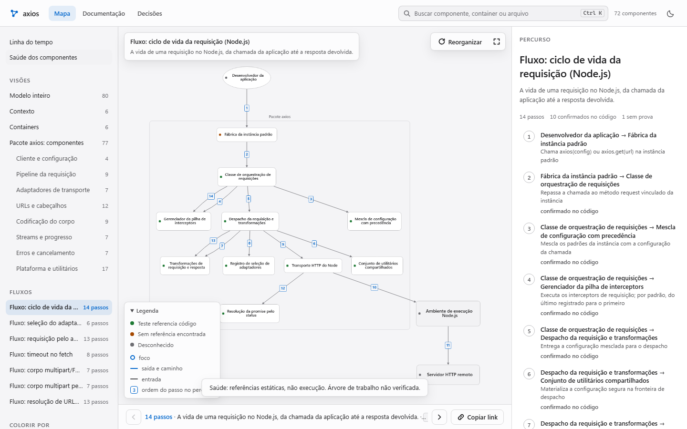

Lodemap
O mapa e a documentação do projeto. Funciona sozinho, sem servidor. O CodeGraph é uma integração opcional. Esta página.
Lodemap · observabilidade de arquitetura · pré-lançamento v0.1.0
O Lodemap transforma o seu repositório num fluxograma vivo: quem conversa com quem, por onde passa cada fluxo e o que mudou em cada versão. Scripts geram as páginas, e testes apontam módulos do código que ficaram fora do mapa.
Skill do Claude CodeOpen source · MITPython 3.11+ e git
Quatro dores que todo time que herda um sistema reconhece.
Times herdam sistemas que ninguém consegue explicar inteiro. A documentação é escrita uma vez e envelhece no merge seguinte; pedir a um modelo para “documentar tudo” sai caro e não garante que o texto bate com o código.
Desenhados à mão uma vez, nunca mais conferidos contra o código.
A estrutura se move a cada versão, mas o que entrou, saiu ou foi alterado só aparece lendo o diff inteiro.
Quem chega precisa descobrir sozinho por onde o pedido passa.
“Pronto” e “em andamento” sem arquivo nem commit que sustentem; números citados sem origem.
Histórico calculado a partir das versões do mapa no git.
A linha do tempo compara identificadores estáveis do mapa entre cinco releases auditadas. Selecione uma versão, toque a evolução e consulte o histórico de um componente.

Uma fonte de verdade no repositório e as saídas geradas a partir dela. Tudo roda local, sem servidor.
O modelo de arquitetura mora no seu repositório, em Structurizr DSL. As páginas são geradas a partir desse modelo.
Navegue por visões, percorra fluxos e inspecione as relações e os caminhos de código de cada componente.
explorador/index.html
Referências estáticas de testes, cobertura, histórico git e relatórios JUnit quando disponíveis. Ausência de dados é mostrada como desconhecida; referência a teste não comprova execução.
explorador · saúdeDocumentação com busca, diagramas e decisões registradas. O relatório de evolução apresenta as alterações por versão.
leitor/index.htmlCada número ligado a um componente aponta o arquivo e o commit de onde saiu. Um teste confere se a fonte ainda existe.
metricas/metricas.jsonUm pytest que falha quando algum módulo do código fica fora do modelo. O mapa não envelhece em silêncio: o CI avisa.
tests/test_arquitetura_cobertura.pySistema, containers, componentes por área, relações nomeadas, visões e fluxos dinâmicos. Cada componente tem status: pronto, em andamento, aguardando, planejado ou fora do foco.
workspace.dsl · model/ · views/# model/componentes-api.dsl (exemplo) group "Roteamento" { roteador = component "Roteador" "Escolhe o agente" { properties { "status" "Em andamento" "codigo" "app/roteador.py" } } } roteador -> fila "Publica a tarefa"
O teste de cobertura e o gate de qualidade existem para o mapa não ficar para trás. São a garantia, não a promessa principal.
No mapa auditado do axios v1.21.1, o gate confere estrutura e caminhos. A demo mostra referências estáticas de testes; sem relatório de execução, o resultado é desconhecido.
72 de 72 módulos cobertos no modelo 177 de 177 pares do código encontrados 208 relações qualificadas 94,6 pontos · piso 84,6

A linha de base pública é o exemplo do axios: references/baseline-qualidade.json e references/gate-qualidade.md. O gate mede propriedades estruturais; não garante que descrições sejam verdadeiras.
Para quem é cada ferramenta e que pergunta ela responde. O Lodemap lê o CodeGraph (codegraph_ponte.py).
CodeGraph e Graphiti são boas ferramentas, e servem a outro trabalho. O Lodemap usa o primeiro como fonte opcional de relações, com 0 tokens.
| Critério | Lodemap | CodeGraph | Graphiti |
|---|---|---|---|
| Para quem | Pessoas e agentes que precisam entender a arquitetura do repositório | Agentes de código que consultam símbolos, chamadas e impacto | Agentes que precisam de memória de longo prazo |
| Responde | Quem conversa com quem, por onde passa cada fluxo, o status declarado e o que mudou | Onde está um símbolo, quem o chama e o que uma edição afeta | O que o agente sabe e desde quando cada fato vale |
| Mantido por | Scripts geram as páginas; testes apontam módulos fora do mapa; a modelagem depende das mudanças e decisões do projeto | Índice atualizado pelo observador de arquivos | Episódios gravados pelo agente e extraídos por modelo |
| Mostra a evolução | Compara versões do mapa no git; cinco releases auditadas na demo (FIG. 02) | Reflete o estado atual do código | Guarda o histórico dos fatos (valid_at e invalid_at); não desenha a arquitetura |
As colunas CodeGraph e Graphiti resumem a descrição que cada ferramenta publica em seu servidor MCP, lida em 10/11/2026; confira nos projetos antes de decidir. A coluna Lodemap vem da página atual.
Resposta a uma objeção: manter o mapa vivo precisa ser barato. Medido uma vez, em 09/11/2026.
As barras mostram chamadas registradas em rodadas históricas, não uma previsão para modelos novos.
51 = 50 de Sonnet + 1 de Haiku; 20 = 19 + 1. Somas feitas a partir dos números da página atual. Nenhuma chamada passou de 100 mil tokens de contexto (pico de 97 mil).
Palavra por palavra. Uma mudou: o módulo de cookies, que ganhou suporte à Cookie Store API naquela versão.
Em 5 pares de versões, 78 arquivos alterados pediram 32 revisões: só reabre o módulo cuja superfície pública mudou.
Contra 129.385 de um subagente com a mesma nota (96,9; intervalo de 95%: 92,7 a 98,7).
Valor em dinheiro: —. Valor monetário ainda depende de decisão. A página atual traz o preço equivalente de API de cada rodada, que não é fatura, junto do método de cálculo. A economia de tokens para agentes não foi demonstrada (FIG. 08).
Requer Python 3.11+ e git. O instalador mostra cada mudança, guarda cópia de tudo que toca e desfaz byte a byte.
# o repositório público abre no lançamento git clone https://github.com/skarL007/lodemap && cd lodemap python -m lodemap instalar --perfil padrao # simulação: só mostra python -m lodemap instalar --perfil padrao --aplicar # aplica, com backup e manifesto
python -m lodemap plano --repo . # 0 tokens: módulos, custo, tempo, arquivos python -m lodemap consentir --repo . --escopos gerar,modelo --orcamento-mensal 5 python -m lodemap reverter # desfaz a última instalação
O sinal − é o que o Lodemap ainda não faz ou não provou. O + é o que está pronto e foi medido.
O mapa e a documentação do projeto. Funciona sozinho, sem servidor. O CodeGraph é uma integração opcional. Esta página.
Servidor MCP e hooks em Rust para o Claude Code: freio antes da execução, lições só com aprovação e números com origem.
Memória de projeto para agentes, em Rust, com firewall antes da execução, agentes padrão e telemetria honesta. Em desenvolvimento.
O repositório abre em breve. Até lá, abra a demo ao vivo ou fale comigo para testar no seu código.